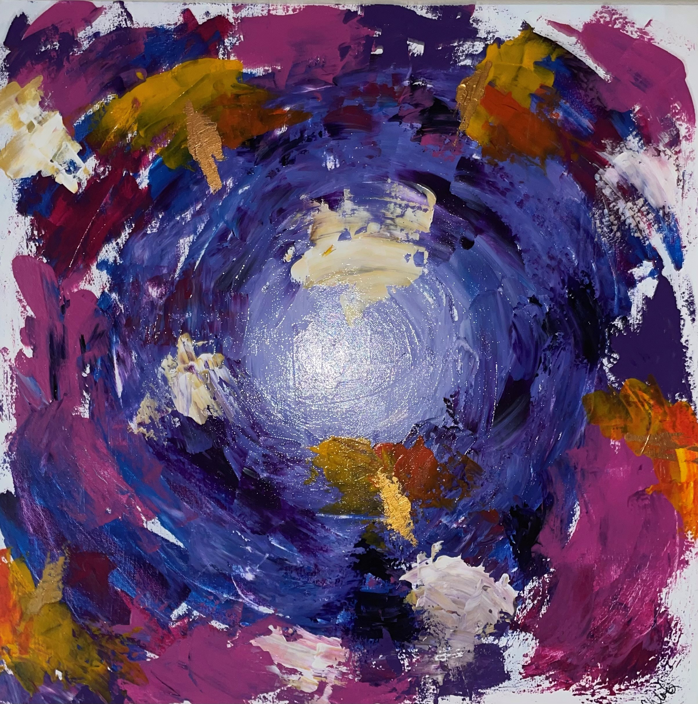

My Style
My Style
My Style
| I create both acrylic paintings and digital paintings. I am trying to diversify the genre of art I make as well as the mediums that I use. My preferred art style is Abstract and my personal favorite styles from other artists are abstract, surrealism, and classical art. |  |
| The thing I like about creating abstract art is that there is freedom to create whatever you want. There is no set structure, you don’t have to stress over being anatomically correct, and aspects of your art don’t have to be perfect. In fact my favorite thing about abstract art is that mistakes made during the art making process can be incorporated into the work and not covered up. Sometimes a mistake made while creating an abstract piece can entirely redirect the plans for the piece and create something different than originally planned. Some of my favorite pieces that I have done myself were redirected because of a mistake that I made during the process of making the piece. | |
| I hope to grow as an artist in many different ways. I Iove abstract because theres no set guidlines or rules that comes with creating it. You could create so many different type of abstract projects that look nothing alike, no similar patterns, and no similar structure. There are an infinite amount of projects you can create that look entirely different. |  |